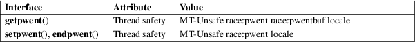

getpwent, setpwent, endpwent − get password file entry
Standard C library (libc, −lc)
#include
<sys/types.h>
#include <pwd.h>
struct
passwd *getpwent(void);
void setpwent(void);
void endpwent(void);
Feature Test Macro Requirements for glibc (see feature_test_macros(7)):
getpwent(),
setpwent(), endpwent():
_XOPEN_SOURCE >= 500
|| /* glibc >= 2.19: */ _DEFAULT_SOURCE
|| /* glibc <= 2.19: */ _BSD_SOURCE || _SVID_SOURCE
The getpwent() function returns a pointer to a structure containing the broken-out fields of a record from the password database (e.g., the local password file /etc/passwd, NIS, and LDAP). The first time getpwent() is called, it returns the first entry; thereafter, it returns successive entries.
The setpwent() function rewinds to the beginning of the password database.
The endpwent() function is used to close the password database after all processing has been performed.
The passwd structure is defined in <pwd.h> as follows:
struct passwd {
char *pw_name; /* username */
char *pw_passwd; /* user password */
uid_t pw_uid; /* user ID */
gid_t pw_gid; /* group ID */
char *pw_gecos; /* user information */
char *pw_dir; /* home directory */
char *pw_shell; /* shell program */
};
For more information about the fields of this structure, see passwd(5).
The getpwent() function returns a pointer to a passwd structure, or NULL if there are no more entries or an error occurred. If an error occurs, errno is set to indicate the error. If one wants to check errno after the call, it should be set to zero before the call.
The return value may point to a static area, and may be overwritten by subsequent calls to getpwent(), getpwnam(3), or getpwuid(3). (Do not pass the returned pointer to free(3).)
|
EINTR |
A signal was caught; see signal(7). | ||
|
EIO |
I/O error. | ||
|
EMFILE |
The per-process limit on the number of open file descriptors has been reached. | ||
|
ENFILE |
The system-wide limit on the total number of open files has been reached. | ||
|
ENOMEM |
Insufficient memory to allocate passwd structure. | ||
|
ERANGE |
Insufficient buffer space supplied. |
/etc/passwd
local password database file
For an explanation of the terms used in this section, see attributes(7).

In the above table, pwent in race:pwent signifies that if any of the functions setpwent(), getpwent(), or endpwent() are used in parallel in different threads of a program, then data races could occur.
The pw_gecos field is not specified in POSIX, but is present on most implementations.
POSIX.1-2008.
POSIX.1-2001, SVr4, 4.3BSD.
fgetpwent(3), getpw(3), getpwent_r(3), getpwnam(3), getpwuid(3), putpwent(3), passwd(5)